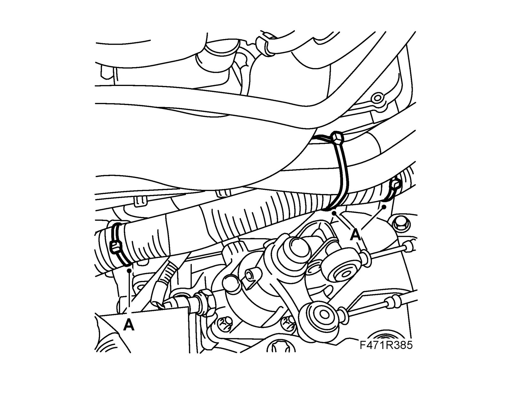
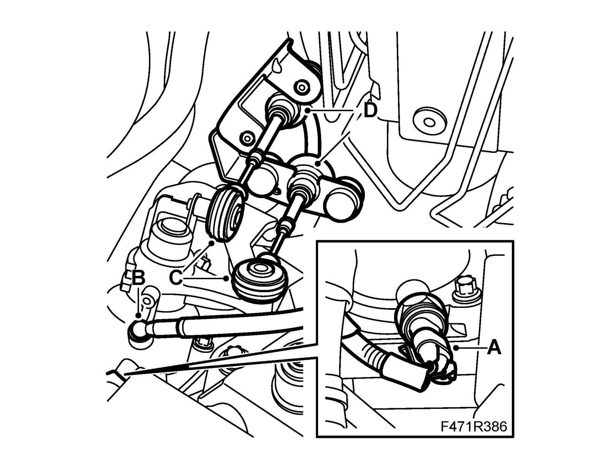
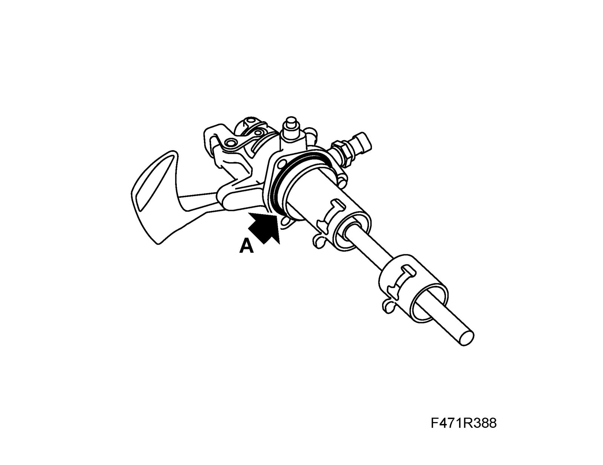
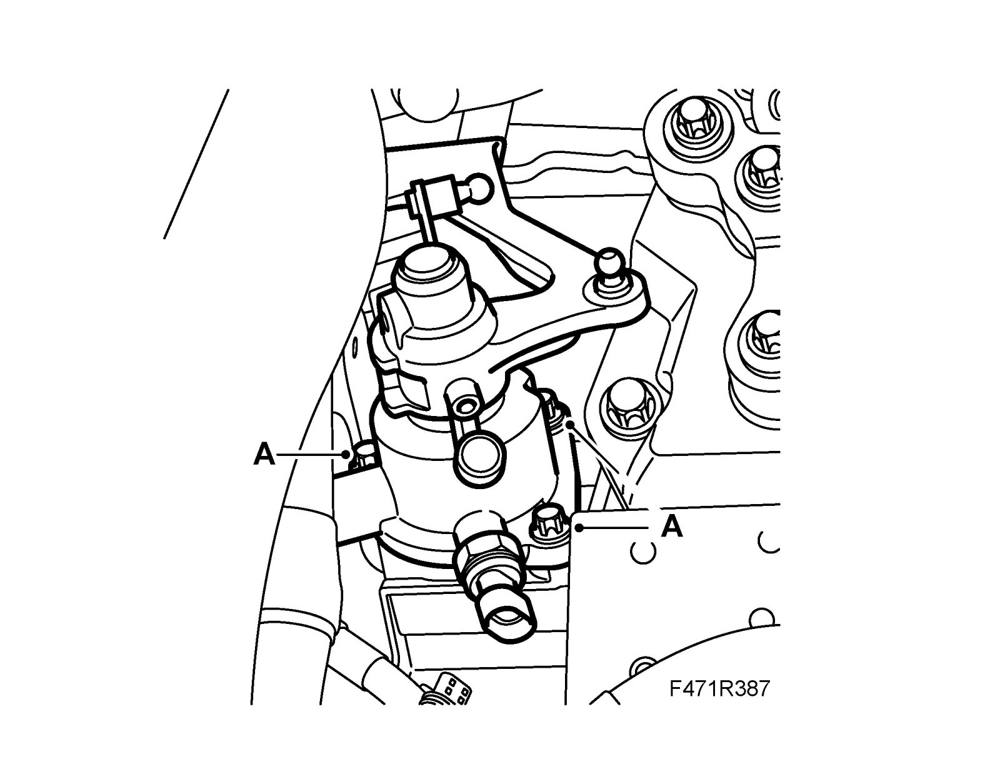

Selector Unit
Selector unitTo remove
1. Remove the battery
2. Remove Battery cover, lower section.
3. Z19: Loosen the engine harness' cable tie (A).

4. Unplug the connector from the reversing light switch (A)

5. Remove the gearbox's bleed hose (B).
6. Remove the gear cables:
- Remove the gear cables from the shift arms (C).
- Press the locking sleeves backward and remove the gear cable sheaths from the bracket (D).
7. Blow clean around the selector unit.
8. Remove the selector unit:
- The selector unit must be in neutral position to enable removal.
- Remove the bolts and lift up the selector unit (A).

To fit
1. Fit the sealing ring onto the selector unit (A).
- The selector unit must be in neutral position to enable fitting.

2. Fit the selector unit onto the gearbox (A).
Tightening torque: 25 Nm (18 lbf ft)

3. Connect the gear cables.
- Press the locking sleeves backward and fit the gear cable sheaths in the bracket (D).

- Fit the gear cables for the shift arms (C).
4. Fit the bleed hose (B).
5. Plug in the reversing light switch connector (A).
6. Z19: Fit the engine harness' cable tie (A).

7. Adjust the gear positions in accordance with Adjusting gear cables. Adjustments
8. Fit Battery cover, lower section.
9. Fit the battery.
10. Carry out Measures after disconnecting the battery.